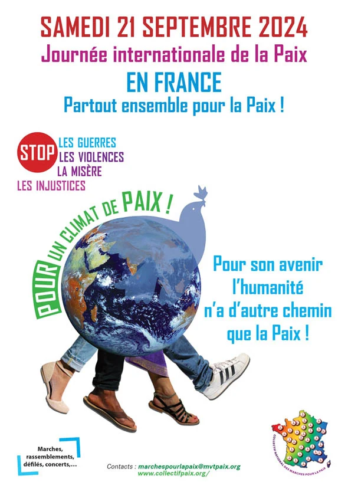

Annonce archivée
« Partout ensemble pour la Paix ! » Le rendez-vous du 21 septembre 2024
Date indiquée par Facebook · 20 septembre 2024
Repères éditoriaux
Nous avons relayé l’affiche de la Journée internationale de la paix. Elle appelle à des initiatives partout en France le 21 septembre 2024 et lie la paix au combat contre les guerres, les violences, la misère et les injustices.

Sources
Archive rouge · document diffusé sur Facebook · AR-0002-FB-01292
À lire aussi · « La paix maintenant ! » Le tract du PCF avant le 8 Mai